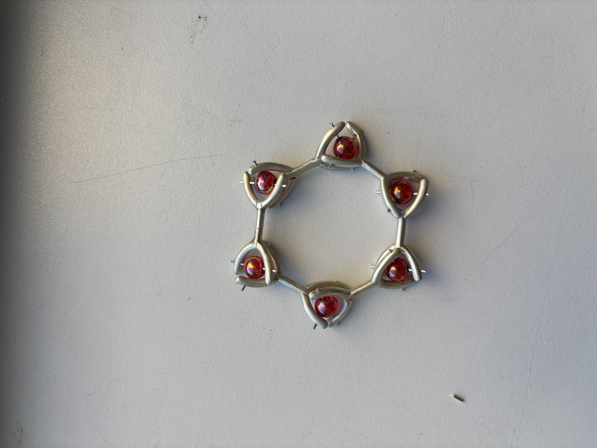
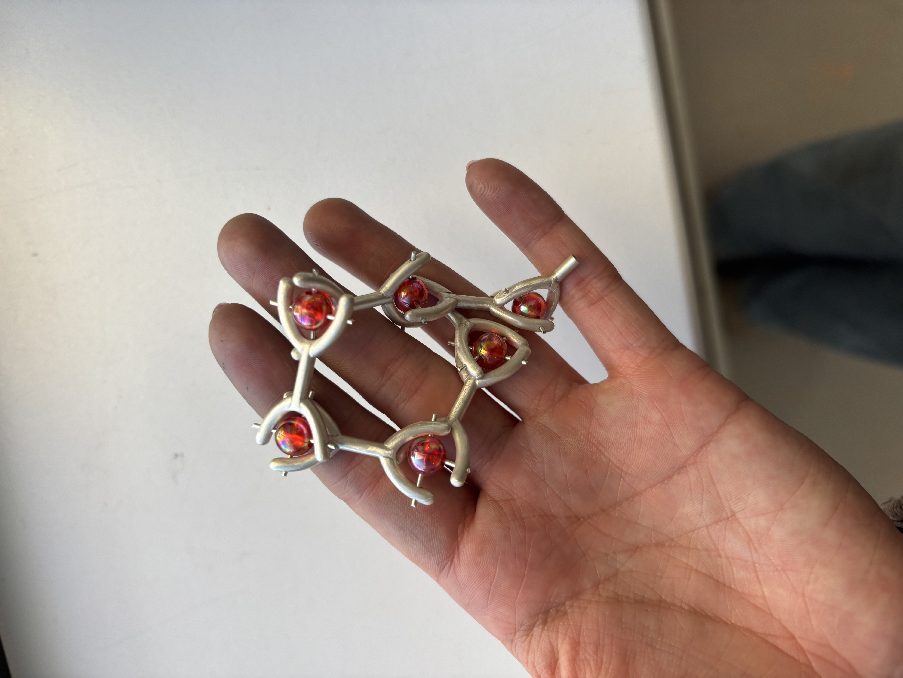
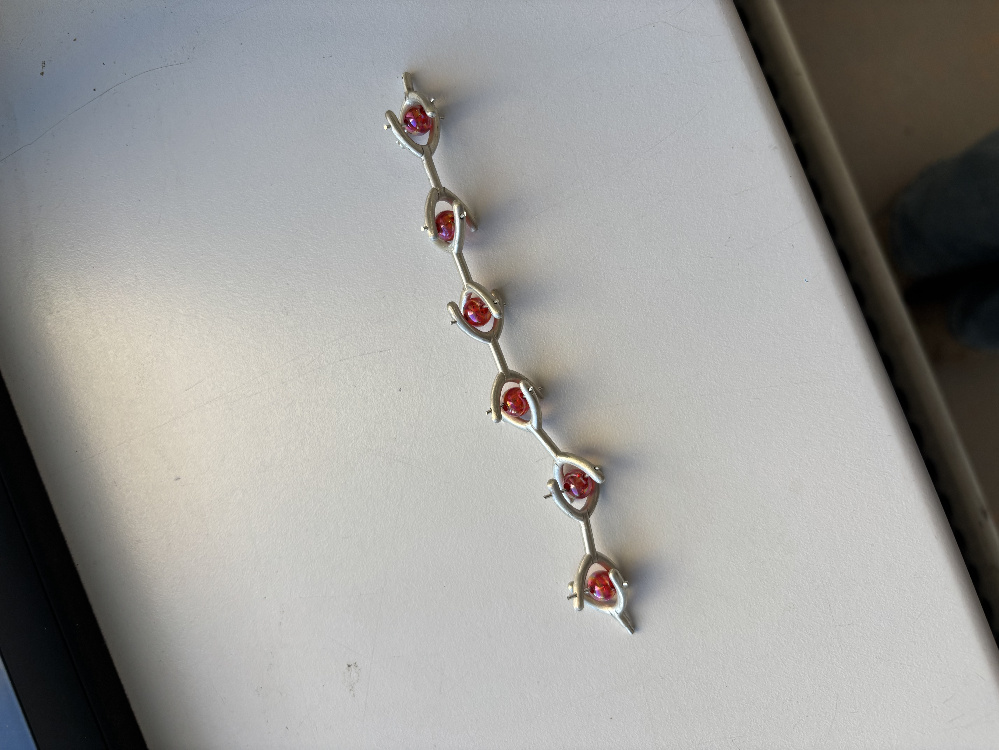
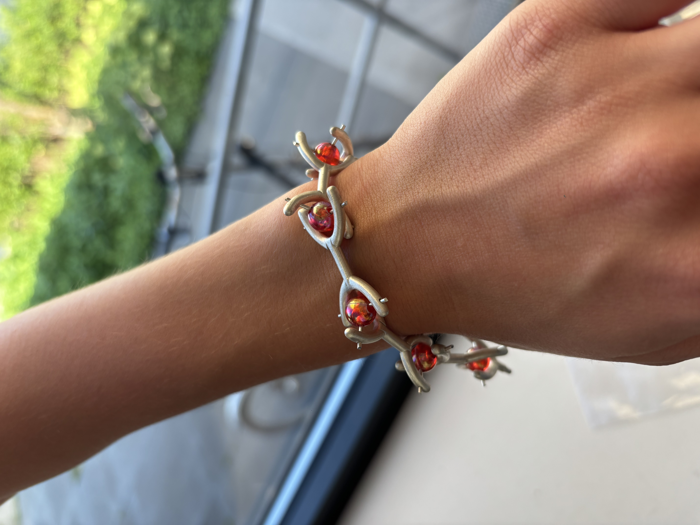

Schakelarmband
Schakelarmband met kleurelement.
In mijn schakelarmband heb ik beweegbare verbindingen toegepast zodat de schakels soepel en comfortabel om de pols vallen. De beweging ondersteunt het ontwerp en laat het kleurelement subtiel meespelen tijdens het dragen. Ik heb eerst via CAD het design gemaakt en vervolgens uitgewerkt in 925 zilver met gekleurde kralen.




